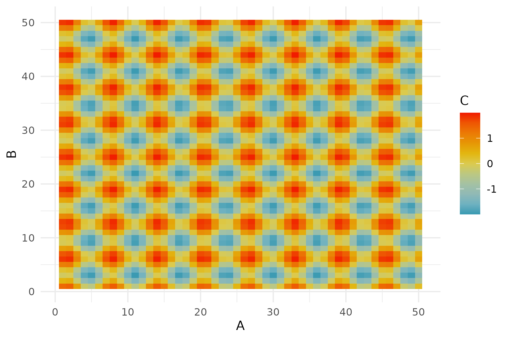
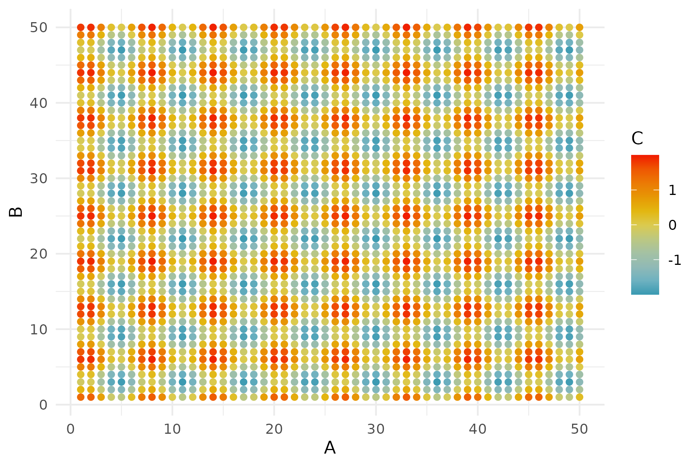
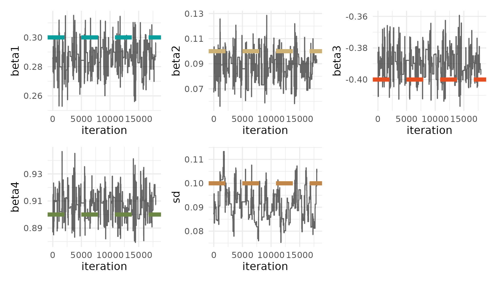

using CSV, DataFrames
resistance = CSV.read("graphs/resistance_data.csv",
DataFrame; select=2:24);Julia/R Interoperability + Graphs
R/Julia Interoperability
Introduction
Interoperability of programming languages refers to the ability for two or more languages to interact as part of the same system. Here, I’ll demonstrate how to pass messages and data between R and Julia, first by calling to R in Julia and then by calling to Julia in R. One of the benefits to Julia/R interoperability is being able to combine the R library ecosystem with the speed of Julia’s JIT. I’ll finish with an example of how I see R and Julia being used together.
The two main packages we’ll use are:
RCall: programming in a Julia environment and calling to RJuliaCall: programming in a R environment and calling to Julia
R in Julia
We will use the RCall package to pass messages and data to and from R while in a Julia session.
We will first initialize the R process in the background:
# Julia
using RCallThere are multiple ways of interacting with R in Julia:
- macros to transfer data
- messaging R expressions
RCallAPI
Macros to transfer data
The @rput and @rget macros can be used to transfer variables between Julia and R.
@rput transfers data from Julia to R:
# Julia
z = 1;
@rput z;Now, this R command will return the value of z passed from Julia.
# R
z[1] 1@rget transfers data from R to Julia. If we have defined o in R:
# R
o = 2Back in Julia, we do not yet have the variable o until we use the @rget macro:
# Julia
@rget o2.0Multiple pieces of data can also be passed on one line:
# Julia
foo = 2;
bar = 4;
@rput foo bar;And then used in R:
# R
foo + bar[1] 6Messaging R expressions
We can also use the R"" string macro to wrap an R expression.
# Julia
x = R"rnorm(10)";
typeof(x)RObject{RealSxp}You can see that this returns the result as an RObject. An RObject is a Julia wrapper for an R object (known as an “S-expression” or “SEXP”). It is stored as a pointer which is protected from the R garbage collector.
Since RObject is just a reference to an R object inside Julia, we can use rcopy() to extract the actual data and convert it into a Julia type. More on rcopy in a bit.
# Julia
x_copy = rcopy(x);
typeof(x_copy)Vector{Float64} (alias for Array{Float64, 1})Variable substition of Julia objects can be done with the $ symbol:
# Julia
# generate random numbers in Julia
a = randn(10);
# calculate the mean in R
mean_a = rcopy(R"mean($a)")-0.13877863876023375RCall API
The package RCall has an API with functions to interface with the package.
reval(): evalues input string as R code in the R environment, and then returns the result as anRObject. This is identical to using theR""string macro.
# Julia
# R's iris flower dataset
iris = reval("iris");
# look at column names
names(iris)5-element Vector{Symbol}:
Symbol("Sepal.Length")
Symbol("Sepal.Width")
Symbol("Petal.Length")
Symbol("Petal.Width")
:SpeciesReferencing a column in the dataframe corresponds to the pointer to the object in R:
# Julia
iris[:Species]Ptr{IntSxp} @0x00005619f6348900rcall()to construct function calls
Get dimensions of the iris dataset:
# Julia
dims = rcall(:dim, iris);
print(dims)RObject{IntSxp}
[1] 150 5rcopy()convertsRObjectsto Julia objects
This function uses a variety of heuristics to pick the most appropriate Julia type:
# Julia
rcopy(R"dim(iris)")2-element Vector{Int64}:
150
5This R function takes temperature and precipitation values and returns a happy index:
# Julia
precip = 10;
rcopy(
R"""
happy_index <- function(temperature, precipitation) {
return(ifelse(temperature > 70 && precipitation < 5,
'I am very happy', 'I am very sad'))
}
happy_index(80, $precip)
"""
)"I am very sad"Or you can pass the function itself to julia
# Julia
happy_index = rcopy(
R"""
happy_index <- function(temperature, precipitation) {
return(ifelse(temperature > 70 && precipitation < 5,
'I am very happy', 'I am very sad'))
}
"""
)RCall.RFunction{RObject{ClosSxp}}(RObject{ClosSxp}
)And then run the function:
# Julia
happy_index(90, 0)"I am very happy"You can also force a specific type conversion by passing the output type as the first argument:
# Julia
typeof(rcopy(R"sum(c(1, 2))"))Float64# Julia
rcopy(Array{Int}, R"sum(c(1, 2))")1-element Vector{Int64}:
3@rlibrary macro
You can load exported functions of an R package to the Julia environment with the @rlibrary macro.
Every function in the R package can automatically be called with Julia data structures as arguments, which will be automatically transformed into R data structures.
# Julia
# create a dataframe in Julia
using DataFrames, RCall
df = DataFrame(A = repeat(1:50, inner = 50), B = repeat(1:50, outer = 50));
# use tidyverse to update the data frame
df2 = rcopy(
R"""
library(tidyverse)
$df %>% mutate(C = sin(A) + cos(B))
"""
);# Julia
# load functions from R packages
@rlibrary wesanderson
@rlibrary ggplot2
# use ggplot syntax in Julia
p1 = ggplot(df2) +
geom_tile(aes(x = :A, y = :B, fill = :C)) +
scale_fill_gradientn(colors = wes_palette("Zissou1", 100,
type = "continuous")) +
theme_minimal();
R"ggsave('p1.png', plot=$p1, width=6, height=4, dpi=300)";
One thing to be careful about:
A few issues can arise when R commands don’t translate directly to Julia code, like a dot, which is often used in R arguments. For example, the dot in na.rm.
You can get around this using the var string macro in RCall:
# Julia
p2 = ggplot(df2) +
geom_point(aes(x = :A, y = :B, color = :C),
var"na.rm" = true) +
scale_color_gradientn(colors = wes_palette("Zissou1", 100,
type = "continuous")) +
theme_minimal();
R"ggsave('p2.png', plot=$p2, width=6, height=4, dpi=300)";
Julia in R
Now let’s switch gears and work primarily in R, while passing messages and data to and from Julia, as well as calling Julia functions.
# R
library(JuliaCall)julia_setup sets up automatic type conversion and is necessary for every new R session to use the package. If not carried out manually, it will be invoked automatically before other julia_xxx functions.
# R
julia_setup()Useful operators
These are the main commands for interacting between R and Julia.
julia_call():Takes an argument from R, converts the argument to a Julia object, and then applies a Julia function. The value is then returned to R as an R object and can be assigned to a variable.
Here, no values or variables are generated in Julia.
# R
julia_call("sqrt", 2.0)[1] 1.414214Works for functions with multiple arguments:
# R
julia_call("max", 2.0, -1)[1] 2julia_command(): Evaluates string commands in Julia without returning the result back to R.
# R
julia_command("a = sqrt(2.0)")1.4142135623730951You can run a series of commands, and the final value gets printed.
# R
julia_command("a = sqrt(2.0); b = a + 2")3.414213562373095Note that while julia_command() does not return a value to R, it prints the value and returns NULL.
# R
a <- julia_command("a = sqrt(2.0);")
print(a)NULLIn addition to lines of Julia, we can also use julia_command() to create a function, and then use julia_call() to call that function. Here, we’ll create a function that randomly generates aquatic or terrestrial animal names:
# R
julia_library("Random")julia_command(
"
function get_animal(n; aquatic = false)
terra = [\"ibex\", \"snail\", \"armadillo\", \"lynx\", \"parrot\"]
aqua = [\"nautilus\", \"grey whale\", \"coho salmon\",
\"siphonophore\", \"limpet\"]
index = shuffle(1:5)[1:round(Int, n)]
if aquatic == true
animals = aqua[index]
else
animals = terra[index]
end
return animals
end"
)get_animal (generic function with 1 method)And the call that Julia function in with arguments:
# R
julia_call("get_animal", 3, aquatic = as.logical(TRUE))[1] "coho salmon" "limpet" "nautilus" Note that keyword arguments can be separated by a comma, rather than a semicolon.
julia_eval(): Evaluates string commands in Julia and returns the result back to R.
# R
a <- julia_eval("a = sqrt(2.0);")
print(a)[1] 1.414214And again, this can work on a series of expressions, with the value of the last command will be returned:
# R
c <- julia_eval("a = sqrt(2.0); b = a + 2; c = b / 4;")
print(c)[1] 0.8535534When do you use julia_command() vs. julia_eval()?
# R
system.time(
julia_command("x = rand(10000000);")
) user system elapsed
0.062 0.024 0.087 # R
system.time(
julia_eval("x = rand(10000000);")
) user system elapsed
0.132 0.044 0.177 julia_assign(): Takes an R object like a number, vector, matrix, etc., turns it into a Julia object and assigns a variable name to it. This variable can then be used in subsequent Julia commands.
# R
julia_assign("theta", c(1, 2, 3, 4)) # assign a vector to theta Julia object# R
julia_eval("sum(theta)") [1] 10Since variables exist in different environments, there are no conflicts. Although it’s probably bad practice to have the same variable names in different environments with different values.
# R
theta <- c(10, 20, 30, 40)# R
julia_eval("sum(theta)") [1] 10We can also assign functions from R to Julia:
# R
calc_hypotenus <- function(a, b) {
c <- sqrt(a ^ 2 + b ^2)
return(c)
}
julia_assign("calc_hypotenus", calc_hypotenus)
julia_eval("calc_hypotenus(2.5, 4)")[1] 4.716991One cool thing: Even though vectorized operations need to be explicitly defined in Julia, we don’t need to vectorize the function in R before passing it to Julia:
# R
julia_eval("calc_hypotenus([2.5, 1], [4, 1])")[1] 4.716991 1.414214This scalar function works with vector arguments! (i.e., you don’t have to do calc_hypotenus.())
Note on type in R vs. Julia
In R, these are both doubles:
# R
typeof(1) == typeof(1.0)[1] TRUEWhereas the type is different in Julia
# R
julia_command("typeof(1) == typeof(1.0)")falseIn R, you have to explicitly cast a number to an integer:
# R
typeof(as.integer(1))[1] "integer"Therefore, if a function requires natural numbers, explicitly make them an integer, because Julia will convert R doubles to floats.
# R
julia_call("rand", 10)Two ways to declare integer type:
# R
# option 1
julia_call("rand", as.integer(10)) [1] 0.51622848 0.84262731 0.34129541 0.93025432 0.06759346 0.24081745
[7] 0.97309952 0.61109445 0.09996454 0.84935517# option 2
julia_call("rand", 10L) [1] 0.43617303 0.08442672 0.74123490 0.89668828 0.55354332 0.73677514
[7] 0.74437974 0.34326656 0.51127525 0.40824412Benefits of bilingualism
Why should we care about the interoperability of R and Julia?!
We can get the best of both worlds: increased speed and access to a larger software ecosystem.
Increased speed
I’ll demonstrate how using Julia can speed up computation, relative to R.
Here I will be implementing a basic Metropolis-Hastings MCMC algorithm to simulate the posterior of a generalized linear model:
\[ Y = \beta_0 + \beta_1X_1 + \beta_2X_2 + \beta_3X_3 + \beta_4X_4 + \epsilon \]
First I’ll simulate data:
# R
# true params
beta <- c(0.3, 0.1, -0.4, 0.9)
sd <- 0.1
# simulate data
x <- cbind(rep(1, 100), rnorm(100, 0, 1),
rnorm(100, 0, 1), rnorm(100, 0, 1))
y <- x %*% beta + rnorm(100, 0, sd)I’ll then create an R function to implement one iteration of the MCMC algorithm:
# R
# function for each Metropolis-Hastings MCMC iteration
MCMC_iter_R <- function(theta, y, x, proposal_std, priors) {
# get predictions at current theta
y_current <- x %*% theta[1:ncol(x)]
# calculate likelihood of current theta
lik_current <- (
sum(dnorm(y, mean = y_current, sd = exp(last(theta)), log = TRUE)) +
sum(sapply(seq_along(priors),
function(i) dunif(theta[i], min = priors[[i]][1],
max = priors[[i]][2], log = TRUE)))
)
# get new theta
theta_new <- rnorm(length(theta), theta, proposal_std)
# calculate likelihood of new theta
y_new <- x %*% theta_new[1:ncol(x)]
lik_new <- (
sum(dnorm(y, mean = y_new, sd = exp(last(theta_new)), log = TRUE)) +
sum(sapply(seq_along(priors),
function(i) dunif(theta_new[i], min = priors[[i]][1],
max = priors[[i]][2], log = TRUE)))
)
# accept?
prob <- min(exp(lik_new - lik_current), 1)
# return theta
if (runif(1) < prob) {
return(theta_new) # Accept new theta
} else {
return(theta) # Reject and keep old theta
}
}And then a function to implement n iterations of the algorithm.
# R
# function for entire algorithm
get_samples_R <- function(iter, initial_values, y, x,
proposal_std, priors) {
# create sample matrix
samples <- matrix(NA, nrow = iter, ncol = ncol(x) + 1)
# add first values
samples[1, ] <- initial_values
# loop through iterations
for (i in 2:iter) {
samples[i, ] <- MCMC_iter_R(samples[i - 1, ],
y, x, proposal_std, priors)
}
return(samples)
}I will then rewrite these functions in Julia and use julia_command() to pass the functions to Julia.
# R
# write these functions in Julia
julia_command(
"
function MCMC_iter_julia(theta, y, x, proposal_std, priors)
# Get predictions at current theta
y_current = x * theta[1:size(x, 2)]
# Calculate likelihood of current theta
lik_current = 0.0
for i in 1:length(y)
lik_current += logpdf(Normal(y_current[i],
exp(last(theta))), y[i])
end
for i in 1:length(theta)
lik_current += logpdf(Uniform(first(priors[i]),
last(priors[i])), theta[i])
end
# Get new theta by sampling from normal distribution
theta_new = zeros(length(theta))
for i in 1:length(theta)
theta_new[i] = rand(Normal(theta[i], proposal_std[i]))
end
# Calculate likelihood of new theta
y_new = x * theta_new[1:size(x, 2)]
lik_new = 0.0
for i in 1:length(y)
lik_new += logpdf(Normal(y_new[i],
exp(last(theta_new))), y[i])
end
for i in 1:length(theta_new)
lik_new += logpdf(Uniform(first(priors[i]),
last(priors[i])), theta_new[i])
end
# Acceptance probability
prob = min(exp(lik_new - lik_current), 1)
# Accept or reject the new sample
return rand() < prob ? theta_new : theta
end
"
)MCMC_iter_julia (generic function with 1 method)julia_command(
"
function get_samples_julia(iter, initial_values, y, x,
proposal_std, priors)
# Create a matrix to store samples
samples = Matrix{Float64}(undef, iter, size(x, 2) + 1)
# Set the first row to the initial values
samples[1, :] = initial_values
# Loop through iterations
for i in 2:iter
samples[i, :] = MCMC_iter_julia(samples[i - 1, :], y,
x, proposal_std, priors)
end
return samples
end"
)get_samples_julia (generic function with 1 method)Here I’ll see how long it takes to run 100,000 iterations, and will provide initial values for the algorithm, data, information about the proposal distributions, and prior distributions for the parameters, \(\theta\).
# R
system.time(
posterior_R <- get_samples_R(iter = 100000, initial_values = c(rep(0, 4),
log(0.05)),
y, x, proposal_std = rep(0.05, 5),
priors = list(c(-100, 100), c(-100, 100),
c(-100, 100), c(-100, 100),
c(-100, 100)))
) user system elapsed
13.667 0.012 13.688 In R, I will load the Distributions library. This is the same as using Distributions in Julia.
# R
julia_library("Distributions")And then I will time the execution of the function. Note the 100000L iterations argument!
# R
system.time(
posterior_julia <- julia_call("get_samples_julia", 100000L,
c(rep(0, 4), log(0.05)),
y, x, rep(0.05, 5),
list(c(-100, 100), c(-100, 100),
c(-100, 100), c(-100, 100),
c(-100, 100)))
) user system elapsed
1.671 0.040 1.711 Larger software ecosystem
Integrating R and Julia gives us access to the much larger R software ecosystem, while working in Julia.
Let’s say we’re back programming in the Julia environment and want to visualize the posterior samples.
We will first get the posterior samples and true values of \(\theta\) from R.
# Julia
# get posterior from R environment
@rget posterior_julia;
# get true theta from R environment
@rget beta;
@rget sd;We’ll then do some computation in Julia to thin the posterior samples and discard burn-in.
# Julia
thin_int = 5;
burnin = 10000;
posterior_sub = posterior_julia[burnin:thin_int:end, :];We can then use the R"" string macro to wrap an R expression to get pretty traceplots of the posterior samples using the wesanderson, tidyverse, and patchwork R packages:
# Julia
R"""
library(wesanderson)
library(tidyverse)
library(patchwork)
colors <- wes_palette('AsteroidCity1')
get_plot <- function(data, param_name, value, index, color) {
ggplot() +
geom_line(aes(x = 1:nrow(data), y = data[, index]),
alpha = 0.6) +
labs(x = 'iteration', y = param_name) +
geom_hline(aes(yintercept = value), linetype = 'dashed',
color = colors[color], linewidth = 2) +
theme_minimal()
}
final_plot <- get_plot($posterior_sub, 'beta1', beta[1], 1, 1) +
get_plot($posterior_sub, 'beta2', beta[2], 2, 2) +
get_plot($posterior_sub, 'beta3', beta[3], 3, 3) +
get_plot($posterior_sub, 'beta4', beta[4], 4, 4) +
get_plot(exp($posterior_sub), 'sd', sd, 5, 5) +
plot_layout(nrow = 2)
ggsave('traceplot.png', plot=final_plot, width=7, height=4, dpi=300)
""";
# Julia
summary = rcopy(R"""
library(MCMCvis)
colnames($posterior_sub) <- c('beta1', 'beta2', 'beta3', 'beta4', 'sd')
# summarize posterior
MCMCsummary($posterior_sub)
""");
summary5×7 DataFrame
Row │ mean sd 2_5% 50% 97_5% Rhat n_e ⋯
│ Float64 Float64 Float64 Float64 Float64 Bool? Boo ⋯
─────┼──────────────────────────────────────────────────────────────────────────
1 │ 0.286574 0.00854313 0.269641 0.286493 0.302327 missing mis ⋯
2 │ 0.0880451 0.00979923 0.0685494 0.0890485 0.105717 missing mis
3 │ -0.389892 0.00830685 -0.404643 -0.389801 -0.37145 missing mis
4 │ 0.907059 0.00875903 0.889855 0.907852 0.924886 missing mis
5 │ -2.39868 0.07 -2.52381 -2.39383 -2.26059 missing mis ⋯
1 column omittedResources
RCall: https://juliainterop.github.io/RCall.jl/stable/gettingstarted/
JuliaCall: https://hwborchers.github.io/
Graphs in Julia

Here, we will represent this 23 x 23 landscape resistance raster as a weighted simple graph.

Constructing the graph
size(resistance)We will use the library Graphs and Metagraphs. Metagraphs is a wrapper of Graphs that allows us to add properties like node/vertex and edge attributes.
using Graphs, MetaGraphs
# create a MetaGraph - generates vertices
mg = MetaGraph(SimpleGraph(size(resistance)[1] * size(resistance)[2]))Check the number of edges:
# right now has no edges
ne(mg)Generate a dictionary that defines which nodes are neighbors (i.e., contain an edge).
# create data structure with neighbors
neighbors_dict = Dict{Int, Vector{Int}}();
# convert (row, col) to linear index
linear_index = (r, c) -> (r - 1) * size(resistance)[2] + c;
# iterate through each position in the 23 × 23 grid
for r in 1:size(resistance)[1]
for c in 1:size(resistance)[2]
index = linear_index(r, c)
neighbors = Int[]
# add neighbors (if valid)
if r > 1 push!(neighbors, linear_index(r - 1, c)) end # Above
if r < size(resistance)[1] push!(neighbors,
linear_index(r + 1, c)) end # Below
if c > 1 push!(neighbors, linear_index(r, c - 1)) end # Left
if c < size(resistance)[2] push!(neighbors,
linear_index(r, c + 1)) end # Right
# store in dictionary
neighbors_dict[index] = neighbors
end
endQuickly inspect the neighbor dictionary:
length(neighbors_dict)neighbors_dict[124]Add weighted edges
Then we will add edges based on the neighborhood structure and set the “resistance” between nodes as the edge weight.
# add weighted edges based on graph neighbors
ncell = size(resistance)[1] * size(resistance)[2];
for i in 1:ncell
# get row and column of cell
row1 = ceil(Int, i / sqrt(ncell))
col1 = Int(mod(i, sqrt(ncell)))
if col1 == 0
col1 = size(resistance)[2]
end
for j in neighbors_dict[i]
# get row and column of neighbor
row2 = ceil(Int, j / sqrt(ncell))
col2 = Int(mod(j, sqrt(ncell)))
if col2 == 0
col2 = size(resistance)[2]
end
# calculate mean resistance between two nodes
mean_resist = mean([resistance[row1, col1], resistance[row2, col2]])
# add edge and set weight
add_edge!(mg, i, j) # add edge
set_prop!(mg, i, j, :weight,
mean_resist) # add edge weight (resistance)
end
end# now the graph has edges
ne(mg)Graph plotting
We will use the library GraphPlot to create a plot of the graph, and the libraries Compose and Cairo to save to a file. Unfortunately, I couldn’t figure out how to color the edges by the weight. :(
using GraphPlot, Compose, Cairo
p = gplot(mg.graph);
# save the plot to a PNG file
Compose.draw(PNG("graphs/graph.png", 16cm, 16cm), p);Graph calculations
We can then perform graph calculations. Calculating the least cost path between the animal populations is a relevant calculation here.
First I’ll create a ncell x ncell “distance matrix” to describe the weights between nodes.
# create the distance matrix (distmx)
distmx = zeros(Float64, ncell, ncell);
for i in 1:ncell
for j in neighbors_dict[i]
distmx[i, j] = get_prop(mg, i, j, :weight)
end
enddistmx[10, 11]distmx[10, 12]And then designate the source and target nodes:
# two points
pts_x = [12, 9];
pts_y = [23, 2];
# source
source = linear_index(pts_x[1], pts_y[1]);
# destination
target = linear_index(pts_x[2], pts_y[2]);And then finally calculate the shortest path With Astar method in the Graphs library.
shortest_path = Graphs.a_star(mg.graph, source, target, distmx);
shortest_pathI can then calculate the total resistance (i.e., sum of resistance across this least cost path):
total_resistance = [];
# iterate over the edges in the shortest path
for e in 1:length(shortest_path)
# add the resistance between the nodes from the distance matrix
push!(total_resistance,distmx[Graphs.src(shortest_path[e]),
Graphs.dst(shortest_path[e])])
end
sum(total_resistance)Get the nodes in the path:
nodes_in_path = [];
for e in 1:length(shortest_path)
push!(nodes_in_path, Graphs.src(shortest_path[e]))
push!(nodes_in_path, Graphs.dst(shortest_path[e]))
endPlot the graph and highlight the least cost path between source and target nodes:
using Colors
node_colors = Vector{Colorant}(undef, ncell);
# set all nodes to green initially
for i in 1:ncell
node_colors[i] = colorant"lightseagreen"
end
# highlight nodes in the shortest path by setting their color to orange
for i in nodes_in_path
node_colors[i] = colorant"orange"
end
p2 = gplot(mg.graph, nodefillc=node_colors);
# save the plot to a PNG file
Compose.draw(PNG("graphs/graph_with_shortest_path_nodes.png",
16cm, 16cm), p2)Node removal
From a landscape management perspective, we want to figure out how removing habitat will affect connectivity.
Here we can experiment with node removal:
We can remove a few nodes/vertices from the graph:
Graphs.rem_vertex!(mg, linear_index(6, 23));
Graphs.rem_vertex!(mg, linear_index(6, 22));
Graphs.rem_vertex!(mg, linear_index(7, 23));
Graphs.rem_vertex!(mg, linear_index(7, 22));
Graphs.rem_vertex!(mg, linear_index(8, 23));
Graphs.rem_vertex!(mg, linear_index(8, 22));Calculate the new shortest path with this new graph:
shortest_path2 = Graphs.a_star(mg.graph, source, target, distmx);And then see how the resistance between source and target nodes changes:
total_resistance2 = [];
# iterate over the edges in the shortest path
for e in 1:length(shortest_path2)
# add the resistance between the nodes from the distance matrix
push!(total_resistance2, distmx[Graphs.src(shortest_path2[e]),
Graphs.dst(shortest_path2[e])])
end
sum(total_resistance2)